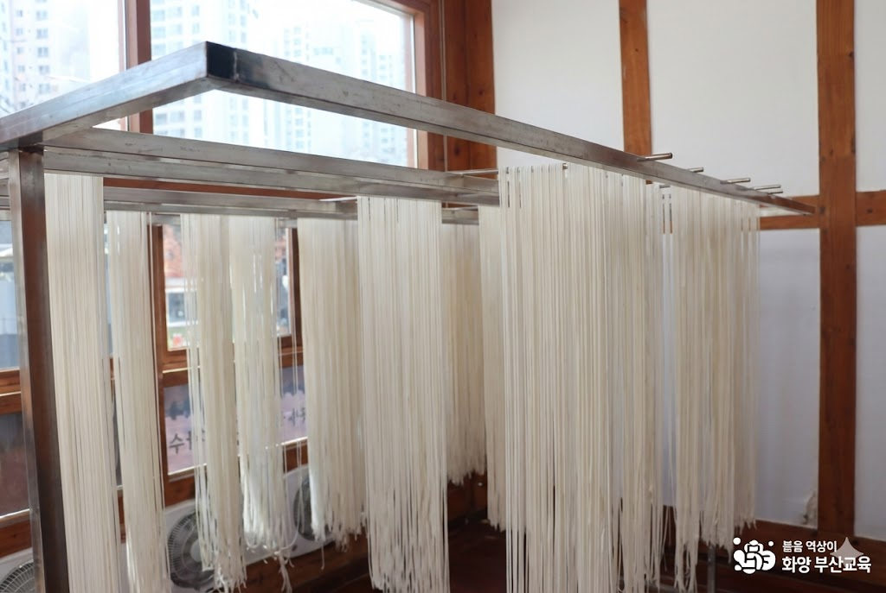

OUR STORY
낙동강 바람이 말린
낙동강 바람이 말린
80년의 쫄깃한 이야기
1945년, 해방의 기쁨과 함께 구포 사람들은 낙동강 둑 위에 국수 가닥을 널기 시작했습니다. 바다를 스치고 올라온 염분 섞인 강바람은 밀가루 반죽에 깊은 감칠맛을 불어넣었고, 뜨거운 부산 햇살은 국수에 쫄깃한 생명을 더했습니다.
지금, 구포국수체험관은 그 80년의 이야기를 살아 있는 체험으로 전합니다. 아이들은 직접 밀가루를 반죽하고, 제면기를 돌리며, 국수가 탄생하는 순간을 온몸으로 느낍니다. 체험 후에는 직접 만든 소면·수제비·코인육수 밀키트를 가정으로 가져갈 수 있어, 저녁 식탁에서 한 번 더 추억을 나눌 수 있습니다.
1945
구포국수 역사 시작
2~3F
체험관 / 홍보관
1F
국수 식당